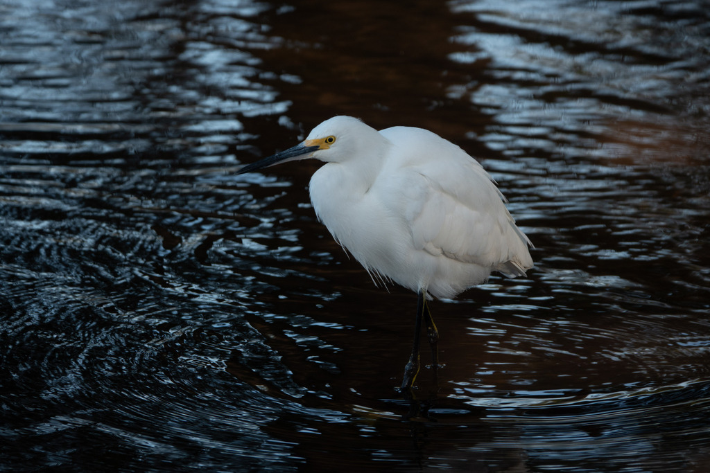

Egretta thula
Ardeidae
📷 Photo by Rob Carr · CC-BY-NC · via iNaturalist · 📅 Mar 22, 2025
Quick Hits
- A medium white egret with a black bill, black legs, and bright yellow feet — as if it is wearing golden slippers.
- The bright yellow feet are a feeding tool: it shuffles them through the water to stir up small fish and shrimp, then strikes.
- A century ago it was nearly wiped out for its lacy breeding plumes, just like the great egret — and its recovery helped fuel the early Audubon movement.
- Smaller and more active than the great egret, it dashes and darts through the shallows rather than standing still.
How to Spot It
Feet
Bright yellow — the 'golden slippers.' The single best field mark.
Bill
Black and slender.
Legs
Black.
Size
Medium — about 24 inches, smaller than the great egret.
Voice
Generally quiet; some harsh squawks at the colony.
What to Look For
A medium white egret actively running through shallows. Check the feet: if they are yellow, it is a snowy egret.
What It Eats
Small fish, shrimp, crabs, insects, and aquatic invertebrates — often flushed with foot-shuffling.
Where & When
Where in the park
Pond edges and shallows, often actively running and shuffling. Look for the yellow feet.
When to see it
Year-round resident.
Watching It Respectfully
Observe and enjoy.
Photo Credits
- © Rob Carr (CC-BY-NC), via iNaturalist